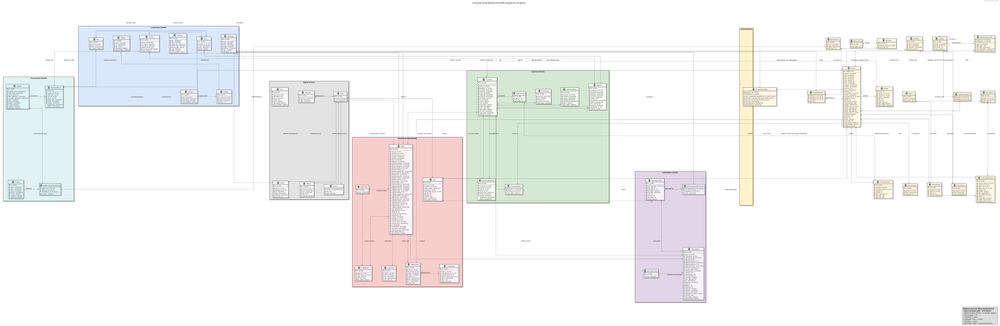
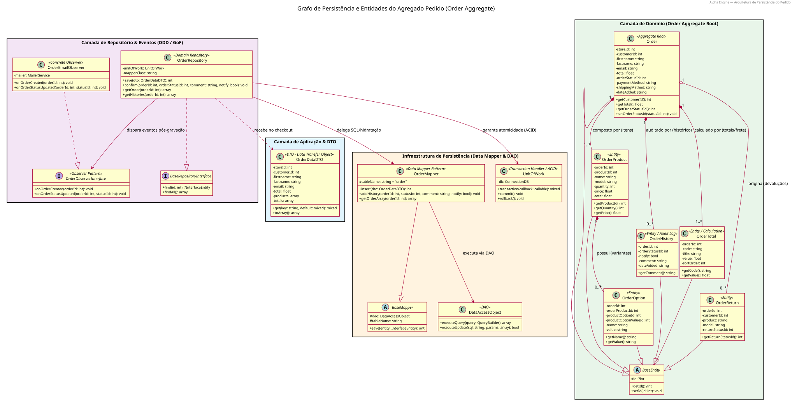

Arquitetura de Software e Banco de Dados (EER)
Estrutura em camadas de alta coesão e baixo acoplamento (Clean ADR), Diagrama Entidade-Relacionamento Estendido (EER) com 40+ tabelas, Grafo de Persistência e catálogo de Padrões GoF.
1. Diagrama Entidade-Relacionamento Estendido (EER / DER Completo)
Modelagem relacional abrangente para MySQL 8.0 (InnoDB com transações ACID), contendo entidades centrais de produtos, SKUs fracionados, estoque físico, clientes PF/PJ, pedidos, itens, transações multi-meios, documentos fiscais e logs de auditoria.

docs/database/EER_Diagram.svg
Concorrência & Versão
Colunas de controle de versão (version INT) em tabelas transacionais críticas (estoque e pedidos) para suporte a bloqueio otimista.
Tradução Sintática
Nomenclatura snake_case normalizada no banco mapeada automaticamente para objetos PascalCase via camada DAO reflexiva.
Compliance Fiscal
Campos estruturados para NCM (8 dígitos), Inscrição Estadual com validação de UF, chave de acesso da NF-e (44 dígitos) e protocolo SEFAZ.
2. Grafo de Persistência e Agregado de Pedido (Order Aggregate)
Mapeamento formal da agregação orientada a DDD (Domain-Driven Design). A raiz da agregação (Order) orquestra a gravação consistente de seus nós satélites em uma única transação atômica.

docs/diagrams/GrafoPersistenciaPedido.svg
3. Padrões de Projeto Gang of Four (GoF) Implementados
Strategy Pattern (Comportamental)
Finalidade: Algoritmos intercambiáveis de cálculo de frete (SEDEX, PAC, Transportadora Própria, Retirada no Balcão) e estratégias tributárias por UF (ICMS-ST vs. DIFAL).
Benefício: Permite plugar novas transportadoras ou regras tributárias sem alterar uma única linha do carrinho ou checkout.
Factory / Abstract Factory (Criacional)
Finalidade: Instanciação dinâmica de DAOs, repositórios e entidades do sistema durante a execução.
Benefício: Garante que o motor de persistência seja completamente agnóstico à implementação física do repositório.
DAO & Repository Pattern (Estrutural)
Finalidade: Isolamento absoluto entre as instruções SQL e os modelos do domínio de negócio.
Benefício: Incorpora tradutor sintático automático e gerencia consultas dinâmicas de forma segura e padronizada.
Observer Pattern (Comportamental)
Finalidade: Disparo desacoplado de eventos como fechamento de compra, baixa física de estoque e geração de nota fiscal.
Benefício: Notifica serviços externos e publica mensagens assíncronas no RabbitMQ sem travar o ciclo HTTP.
Proxy Pattern / Lazy Loading (Estrutural)
Finalidade: ProxyFactory que intercepta o acesso a coleções filhas pesadas (ex.: itens do pedido ou fotos do produto).
Benefício: A entidade filha só é consultada no banco no instante exato em que seu método getter é invocado.
Adapter Pattern (Estrutural)
Finalidade: Unificação das interfaces heterogêneas dos gateways de pagamento (Mercado Pago, Gerencianet/Efí, Cielo).
Benefício: A aplicação conversa exclusivamente com a interface padronizada PaymentGatewayInterface.
4. Conformidade Estrita com Recomendações PSR (PHP-FIG)
| Padrão PSR | Nome da Especificação | Aplicação Prática no Projeto Beta Engine |
|---|---|---|
| PSR-4 | Autoloading Standard | Mapeamento uniforme de namespaces BetaEngine\Domain, BetaEngine\Infrastructure e BetaEngine\Actions. |
| PSR-7 | HTTP Message Interfaces | Imutabilidade estrita de requisições e respostas HTTP (ServerRequestInterface, ResponseInterface) no Slim 4. |
| PSR-11 | Container Interface | Gestão de ciclo de vida e injeção automática de dependências utilizando o container PHP-DI. |
| PSR-15 | HTTP Server Handlers & Middleware | Pipeline de middlewares para segurança em camadas: Anti-CSRF, Rate Limiting, autenticação de sessão e cabeçalhos de segurança. |